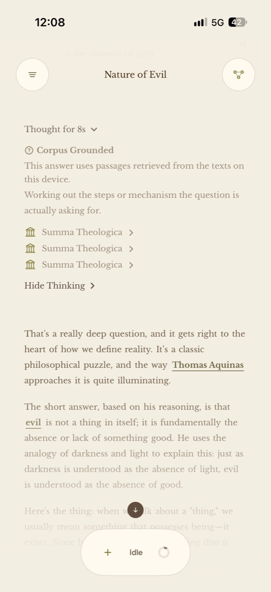

01 · The problem & my role
Give Inquiry Somewhere to Grow.
A conversation is easy to start and easy to lose. For questions about philosophy, theology, and history, I wanted a workspace where someone could test an argument, inspect its sources, and keep the concepts they wanted to return to.
I own the product design, SwiftUI implementation, local model integration, retrieval, persistence, and evaluation. Selected engineering work is explained here, and the app has not been publicly released. Full-source review is available on request.
My product hypothesis is that conversation, contextual definitions, and a lasting map of saved ideas can help people stay with difficult questions. That hypothesis still needs user validation; I’m not claiming a measured improvement in learning.
02 · October 5, 2026 · The product
From a Question to an Insight.
The central flow starts with a question. A source-oriented answer leads to a contextual definition; the user chooses whether to save that definition as an Insight. Saved Insights become a semantic map that can be revisited in the Insight Tree and Study view.
- Ask
Explore a question.
- Inspect
Read the answer and its source.
- Save
Keep a definition as an Insight.
- Connect
Revisit related ideas in the map.
Automatic analysis can suggest broader Node Concepts. It does not silently save an Insight for the user. Semantic distance represents relatedness, not truth or importance.


Watch Angrove in use
Three recordings from the iPhone app, captured October 8, 2026. Each follows one part of the experience.
Ask a question, grow an Insight Tree
A Peloponnesian War inquiry, its answer, and contextual Insights in the conversation’s tree.
Open video · 1 min 49 secExplore your saved ideas
Browse the global Insight Tree and open a saved definition of polis.
Open video · 24 secListen to an answer
Hear an answer read aloud, follow the highlighted text, and open the Reading controls.
Open video · 50 secWatch the earlier Study view clip. The site’s interactive examples are illustrations rather than live model inference.
03 · October 2026 · The architecture
A Whole System on the Phone.
The current development build uses stock instruction-tuned Gemma 4 E4B from the LiteRT Community package. It is not an Angrove fine-tune. Core ML MiniLM embeddings support local passage retrieval and relationships in the map.
- SwiftUI questionConversation and branch identity are captured.
- Shared task queueModel work uses one process-scoped LiteRT runtime.
- Local evidence selectionMiniLM search, source routing, and passage locators retrieve supporting text.
- Answer and source readerA verified source answer or local generation returns to the conversation.
- Saved Insight and mapUser-selected concepts persist and organize through semantic relatedness.
Definitions, naming, and tree labels share the same runtime. A lifecycle manager controls loading, idle unloading, background transitions, and cancellation. There is no HTTP model backend or cloud fallback.


A separate engineering showcase is in preparation: a dated, runnable slice of the Midpoint and Insight Tree embedding code, with sample data, tests, and technical notes. It will be refreshed deliberately rather than automatically synced with the full app. Full-source review is available on request.
04 · October 2026 · Engineering decisions
The Tradeoffs Shape the Experience.
Retrieve evidence locally.
A memory-mapped matrix of 384-dimensional passage vectors supports a vectorized cosine scan. Semantic similarity alone can mistake Nicaea the city for the council, so source routing and text locators complement ranking. Regression tests check that the relevant source text reaches the prompt.
Make model work visible.
Answers, definitions, and tree tasks compete for the same engine. The queue gives users cancellation and reordering, while persisted conversation and branch identifiers keep late results attached to the original question after navigation. When local generation fails, the app exposes a failure rather than inventing a substitute answer.


Keep unsupported claims out of the answer.
Some source requests can return verified passages without another generation. Others use retrieved evidence or abstain when reliable evidence is absent. This makes sources inspectable, but it can also narrow coverage and produce unhelpful refusals. Retrieval quality needs its own evaluation.
Protect saved personal data.
Fully Encrypted saved personal data uses AES-256-GCM with Keychain-managed keys in the development implementation. A separate widget key limits access, and startup validates ciphertext before migrating plaintext. Source integration and physical-device lock and backup-restore checks remain release work. Deliberate conversation exports are readable JSON; displayed content and screenshots are outside this storage boundary. Read the coverage and recovery details.
05 · October 8, 2026 · Speed on the phone
Where the Wait Actually Goes.
I timed the shipping configuration on a base iPhone 17 with 8 GB of memory: stock Gemma 4 E4B on the GPU, 4,096-token context, thinking off, and the app’s own retrieval, queue, and runtime. Two fixed questions ran ten times each from a fresh launch: a one-sentence definition of prudence and a 180-word answer on justice and mercy.
Swipe the table to see all times.
| Question | From launch median / slowest | Model ready median | Peak memory |
|---|---|---|---|
| One sentence (31 words) | 14.1 s / 20.7 s | 7.1 s | 1.38 GB |
| About 180 words | 24.6 s / 27.1 s | 17.6 s | 1.38 GB |
Loading the model typically took 6–9 seconds; the one slower load, 12.9 seconds, was the first launch after installation. Long answers were written at about 10 words per second. Peak memory stayed under 1.4 GB, well inside the phone’s limit, and every answer completed without a crash or memory termination.
Twenty answers in a row
A sustained run asked the long question 20 times back to back, after one warm-up, to see what a long session costs.
What it changed: the app deliberately restarts the model engine after every four answers, a guard against a runtime hang. The run showed its price: about 7 seconds on every fourth answer. That trade-off is now the clearest target for shortening the wait, along with showing answers word by word.
06 · October 2, 2026 · Thinking on or off
Measure Before Choosing a Default.
I compared native thinking on and off through the app pipeline in four completed simulator CPU runs on October 2, 2026. The same build and stock model answered two previously used 40-case development sets.
Swipe the table to see answer times.
| Development set | Thinking off | Thinking on | Median answer time off / on |
|---|---|---|---|
| Held-out | 37/40 | 36/40 | 23.0 s / 43.7 s |
| Sealed-1 | 37/40 | 38/40 | 23.5 s / 47.6 s |
| Total objective passes | 74/80 | 74/80 | — |
The decision: keep native thinking off by default. It showed no aggregate increase in objective passes here and roughly doubled answer time. That observation supports this configuration; it does not establish that thinking never helps.
The evaluation records retain the exact experiment build, model and fixture hashes, aggregate outcomes, and input-artifact hashes. Personal content and native logs are excluded from shared summaries. Original fixtures and scoring material remain in the private evaluation archive; the results above explain the decision but are not a complete independent replication kit.
Request the evaluation methodology and evidence for review.
Behavior tests separately cover model lifecycle, retrieval, source locators, conversation persistence, semantic membership, and encrypted-storage migration. A test suite’s presence is not a claim that the latest working tree has passed a full release gate.
07 · August–September 2026 · Models & runtimes explored
A Working Model Is Only the First Gate.
Before the current E4B/LiteRT integration, I explored larger Gemma packages and a smaller Qwen model through isolated llama.cpp Metal probes on a base iPhone 17. Those experiments tested whether alternative packages could sustain a useful session, and whether a model swap would fix source errors.
Gemma 4 12B: generation passed, retention failed.
A 4.37 GB IQ2_M GGUF generated short text at 512-token context after reducing prefill to 32-token chunks. A retained-session trial produced 48 tokens, then terminated with signal 9 during a requested 40-second hold, correlated with system memory pressure. The available system report did not identify the probe as a specific jetsam victim. Successful short generation had not established enough headroom for a durable app session.
Qwen3-4B: smaller and feasible, but citations still needed work.
The roughly 2.33 GiB Q4_K_M package passed bounded multi-turn probes at 2K and 4K context and a 40-second resident hold. A research-only adapter then exercised it in the actual conversation UI. Fine-tuning uncovered corrupted PDF article boundaries; cleaning the data and reformatting question/answer pairs improved output form, but a citation test still fabricated source text. That reinforced the need to evaluate retrieval and passage use separately from voice and fluency.
Current development remains on Gemma 4 E4B and LiteRT-LM. The lesson is to count working buffers, KV cache, session retention, and factual behavior—not just model size or an attractive answer. Request the historical configurations and supporting records.
08 · What comes next
Validate the Product in People’s Hands.
Angrove is in active development. I have not published adoption, retention, or learning-outcome results. The next product questions are whether people revisit saved Insights, check the source passages, and find the map useful.
Before release, engineering work includes phone lifecycle validation (backgrounding, memory warnings, and idle unloads), shorter waits around the engine restart, encryption migration and backup recovery, model delivery, and a supported-device matrix. Historical phone scores whose raw run artifacts were lost are not used as headline evidence here.